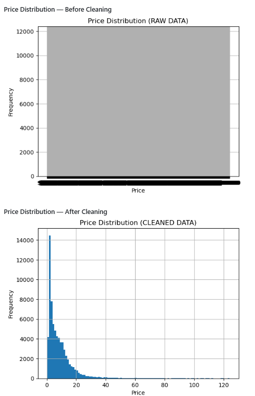
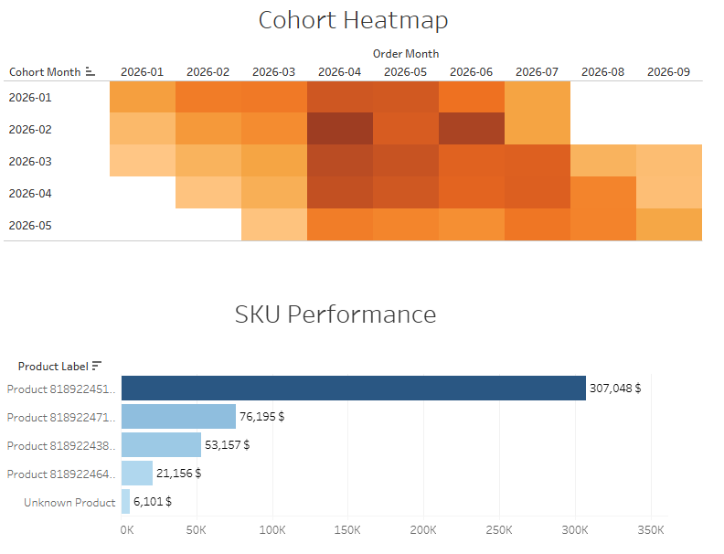
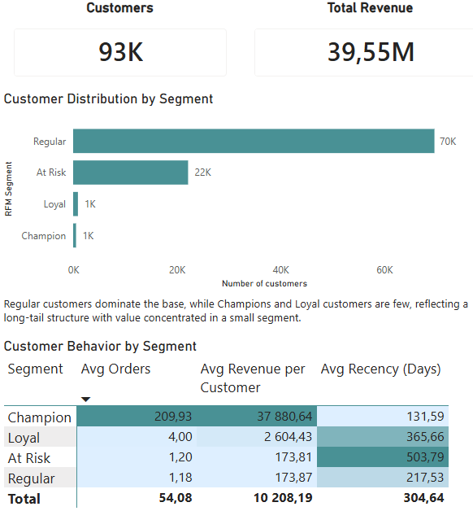
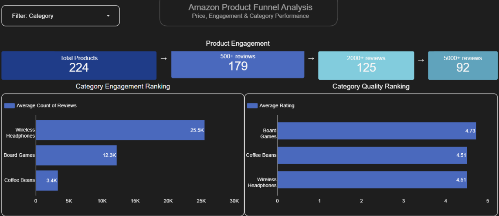
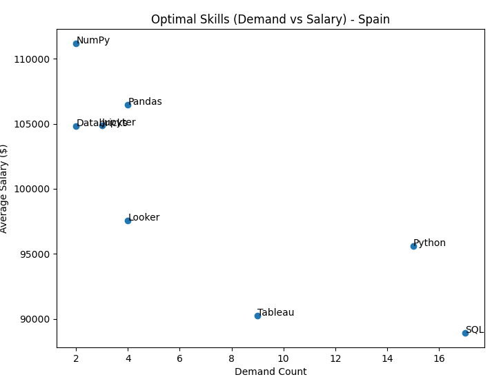

I turn messy e-commerce data into clear answers — through SQL, Python, and dashboards built for real business decisions.
I help small-to-medium e-commerce businesses make sense of messy, incomplete, and scattered data — so they can understand what's actually happening in their sales, customers, and marketing performance.
My work covers the full analytics workflow: from cleaning raw exports and building SQL pipelines, through customer segmentation and cohort analysis, to dashboards that answer the questions your team actually needs answered.
I have a background in commerce and hands-on experience in customer support and sales environments. That means I understand how businesses operate end-to-end, not just how the data looks.

Cleaned and structured 80,000+ raw scraped product records across 21 CSV files. Standardised price formats, parsed sales proxies from text fields, handled outliers with documented rationale, and engineered 5 analytical features including a custom value-efficiency metric.

Built a full analytics engineering pipeline from Shopify API → PostgreSQL → dbt staging and mart models → Tableau dashboards. Includes cohort retention analysis, product concentration, and revenue trend reporting. All models pass dbt data quality tests.

RFM scoring on the Brazilian Olist e-commerce dataset to segment customers into Champions, Loyal, At-Risk, and Lapsed groups. Structured for CRM targeting, retention strategy design, and customer value analysis.

Product-level funnel and pricing behaviour analysis using SQL and Python. Evaluates category performance, pricing distribution patterns, and engagement and conversion behaviour across products.

Exploratory SQL analysis of Spain's data analyst job market. Covers salary distribution, role and category breakdown, and industry trends for data-related roles. Adapted from guided material to the Spain-specific context.
If you have a dataset that needs cleaning, a dashboard that needs building, or a business question that needs answering — send me a message. I'll confirm whether it's a good fit and give you an accurate timeline.